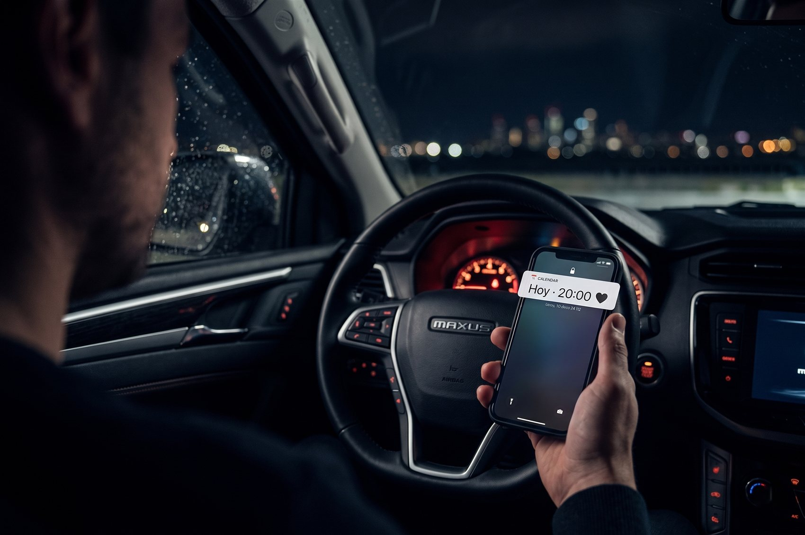
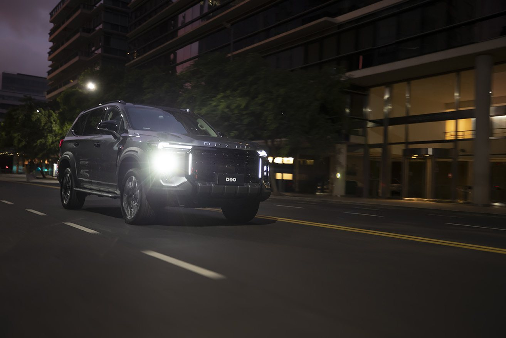
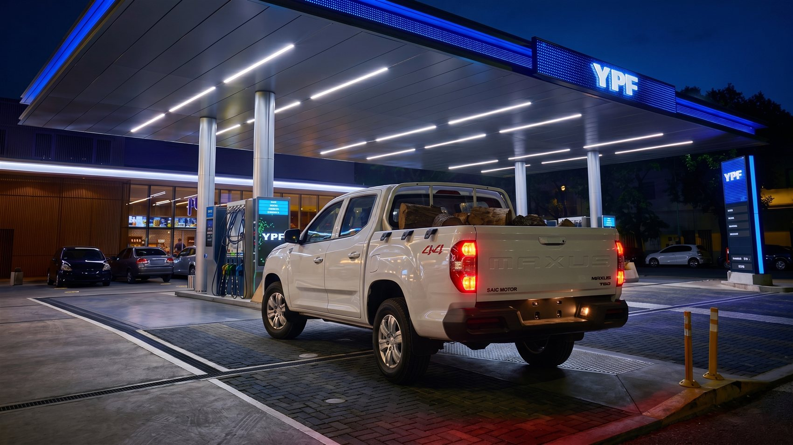
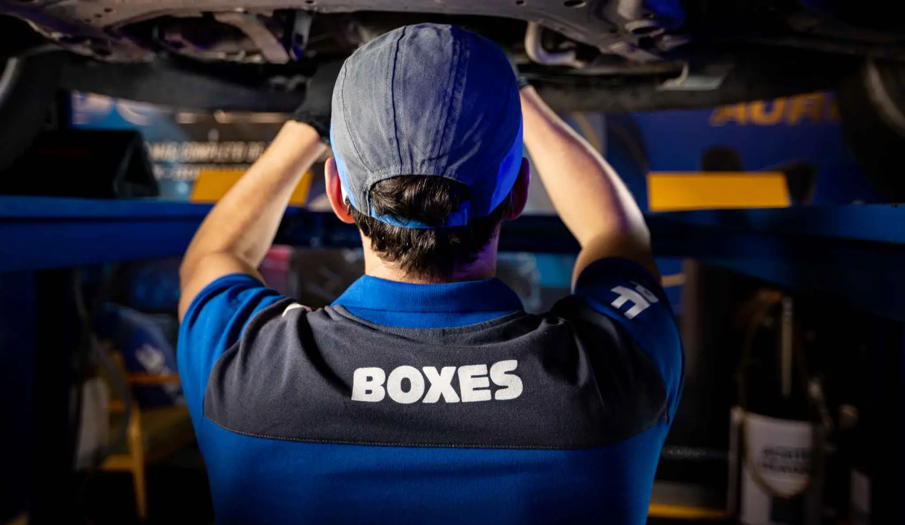
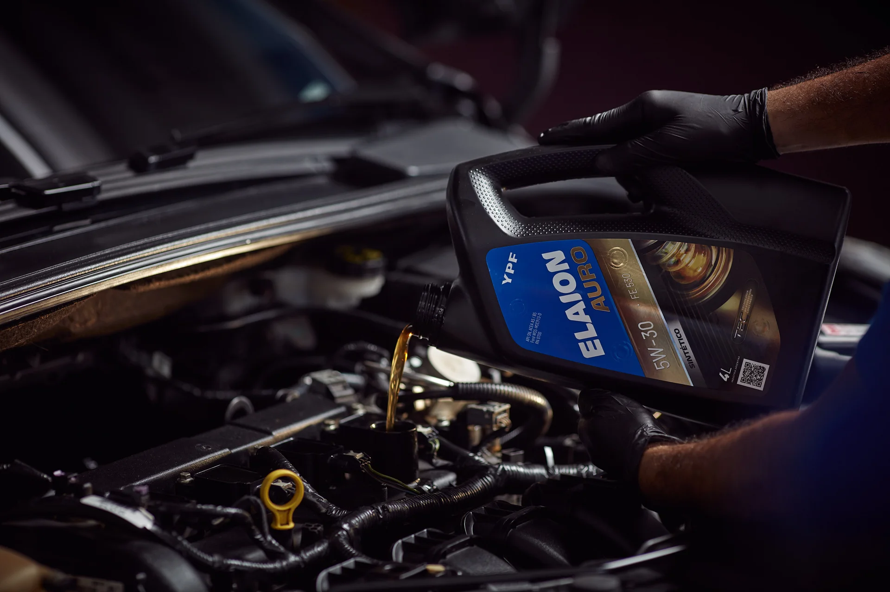
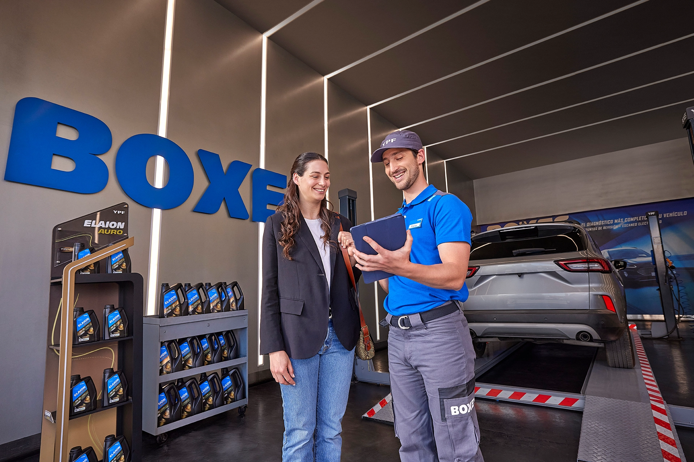

Tu Maxus tiene una cita.
El service se cuenta como una cita romántica. La T60 MAX tiene un encuentro agendado en el YPF Boxes y el técnico la atiende con dedicación: cada control es una "pregunta importante", cada detalle, una muestra de cuidado.
Humaniza el service y lo vuelve deseable y memorable. Conecta emoción con el respaldo oficial, sin perder elegancia. Un giro inesperado que se comparte.

cita-01-notificacion.jpg1Noche. Plano detalle del celular. Notificación: "Hoy · 20:00 ❤". La T60 MAX enciende sus luces.
Hay citas que no se cancelan.

cita-02-ciudad.jpg2La T60 MAX circula por la ciudad. Planos lindos, elegantes, nocturnos.
Las esperás. Las agendás con tiempo.

cita-03-ingreso.jpg3La camioneta dobla y entra al YPF Boxes. Plano de la app mostrando el turno reservado.
Y cuando llega el momento…

cita-04-cita.webp4El técnico se acerca, la mira, sonríe y abre la puerta. Levanta el capot, conecta el escáner, controla fluidos y neumáticos.
Empiezan las preguntas importantes. ¿Cómo te sentís? ¿Te estuvieron cuidando?

cita-05-detalle.webp5Plano detalle: la mano del técnico cierra suavemente el capot. El conductor, relajado, toma un café. En buenas manos.
Cuando alguien te importa, prestás atención a cada detalle.

cita-06-cierre.webp6El técnico devuelve la llave. Última mirada a la camioneta. La T60 MAX vuelve a salir a la ciudad.
Reservá tu turno desde la app Maxus y hacé tu service oficial en YPF Boxes.
 × · "Para quienes eligen su camino."
× · "Para quienes eligen su camino."